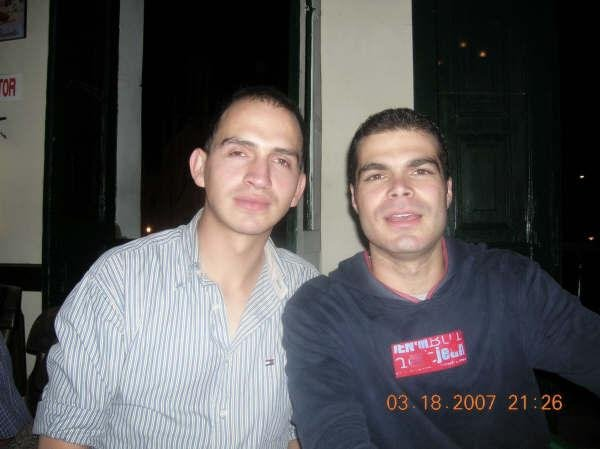
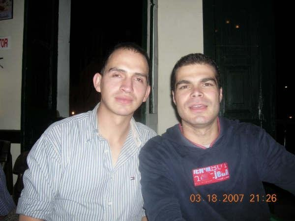

Siempre fui un idealista, pero las cosassinceramente no salieron como yodesde pequeño las planeaba, me enfoque mucho en el deporte , el tenis.
Estudie una carrera tecnóloga enSistemas con unos cortos diplomados de especialización y los trabajos o empleos han ido y venido, lo tengo que admitir.
Alguna vez funde Empresa (Cadenas delavanderias) pero finalmente las vendí.
Hoy por hoy a nivel de emprendimiento puedo decir que soy un empresario enpotencia, aun en potencia, pero con unas ideas de inteligencia de negocio bastante claras y estudiadas y voy en proceso de desarrollo.
Me he vuelto desde hace unos años muy espritualista y creo mucho en el mundo de la holística, soy de los que creo que nosotros hacemos un plan de vida antes de nacer,
incluyendo todo lo bueno, lo malo y otras experiencias que queremos vivir en este plano, para así en definitiva, crecer como seres avanzados que somos todos,
claro esta que hay otros componentes de comportamiento y superación personal que si nos esforzamos por conseguir y desarrollar para así avanzar.